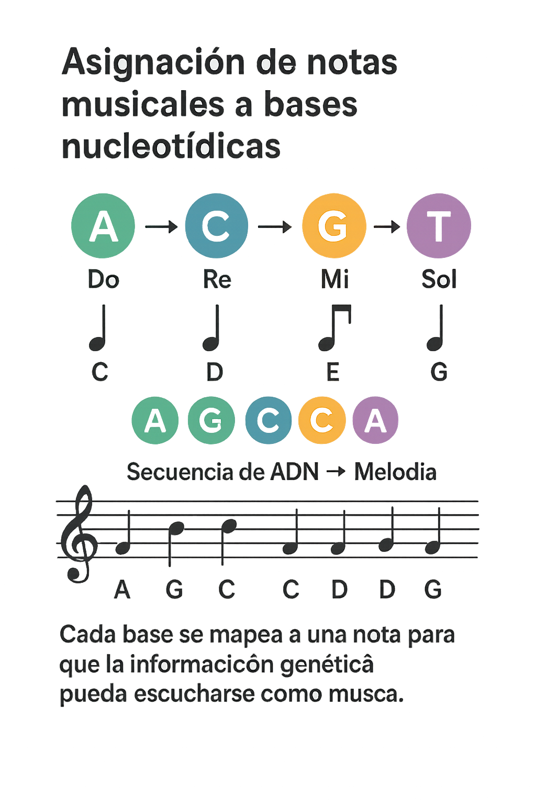
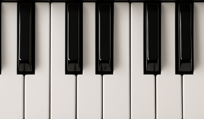

Cuando el ADN suena: convertir la genética en música
En los últimos años han surgido proyectos fascinantes en los que científicos, músicos y artistas han decidido escuchar aquello que normalmente solo vemos en laboratorios: el ADN. La idea puede sonar extraña al principio, pero tiene una lógica sorprendente. Si los genes son una secuencia de “letras” que siguen patrones, ¿por qué no transformarlos en una secuencia de sonidos? De esa curiosidad nació un movimiento creativo y científico que convierte la información genética en música.
La base es sencilla: el ADN está formado por cuatro “letras” —A, T, C y G— y cada letra puede asociarse a una nota, un acorde, un timbre o incluso un ritmo. Cuando se reproducen estas secuencias, aparece una melodía que no ha sido inventada por un compositor, sino escrita por la vida misma. En algunos proyectos, cada aminoácido se transforma en un sonido particular; en otros, las mutaciones generan cambios en la armonía o el ritmo. Así, escuchar ADN es como oír una biografía sonora de la célula.
Uno de los objetivos de estas iniciativas no es solo artístico, sino también científico. Escuchar los genes permite detectar patrones que, a veces, visualmente pasan desapercibidos. Por ejemplo, al transformar la secuencia de un gen en música, ciertos fragmentos repetidos pueden sonar como estribillos, y las mutaciones pueden escucharse como notas que desentonan o rompen la melodía. En algunos laboratorios se ha utilizado esta técnica para ayudar a identificar regiones importantes del genoma, ya que el oído humano es muy sensible para reconocer ritmos y anomalías.
Estos proyectos también han despertado una nueva relación emocional con la biología. Escuchar el ADN de una planta, de un animal o incluso el de un virus genera una sensación curiosa: aquello que parecía completamente abstracto se vuelve cercano y casi íntimo. Algunas personas describen la experiencia como “escuchar el lenguaje de la vida”, aunque no sea literalmente un lenguaje, sino una traducción creativa. Hay artistas que han compuesto piezas completas a partir del ADN humano y otros que han creado conciertos en los que el público puede escuchar cómo “suena” la evolución al pasar de una especie a otra.
En muchos casos, la transformación del ADN en música sirve también como puente para acercar la ciencia al público. Lo que antes eran letras y gráficos difíciles de entender se convierte en melodías que cualquiera puede disfrutar. Este tipo de proyectos ha llegado a museos, escuelas y festivales, demostrando que la ciencia no solo puede informar, sino también emocionar y sorprender.
La idea de “sonificar” el ADN ha abierto una nueva forma de experimentar la biología. No se trata simplemente de ponerle música a la ciencia, sino de descubrir que, de algún modo, la vida guarda un ritmo y una estructura que pueden sentirse. Estos proyectos nos invitan a escuchar el mundo microscópico que habita dentro de nosotros y a pensar que quizá, de manera metafórica, toda forma de vida compone su propia canción.

Vídeo interesante
Para ampliar información
- Sonificación del ADN para el
compromiso
del público en bioinformática
El estudio explora la idea de convertir secuencias de ADN en sonido (“sonificación”) como una herramienta para el compromiso del público con la bioinformática. PMC La motivación es que el ADN, habitualmente presentado como cadenas de letras (A, T, C, G), puede ser traducido a sonidos para hacerlo accesible, atractivo o educativo para audiencias no especializadas.
- Por qué los científicos están
convirtiendo moléculas en música
El biólogo molecular y músico Mark Temple de la Western Sydney University comenzó a mapear las cuatro bases del ADN (A, C, T, G) a notas musicales para «escuchar» secuencias en lugar de solo verlas, con lo cual detectaba patrones más fácilmente.
Esta técnica se denomina sonificación (convertir datos en sonido) o en algunos casos musificación (cuando se produce una composición musical a partir de esos datos).
Si pinchas las teclas blancas del piano te llevará al primer enlace y si lo haces con las teclas negras te llevará al segundo enlace.

¿Quieres volver a otras páginas?
Explora todos los temas y vuelve fácilmente a cualquier apartado
Descubre cómo la genética y la música se entrelazan en el estudio del sonido y la herencia
Descubre cómo tus preferencias musicales podrían relacionarse con rasgos genéticos y patrones de personalidad.